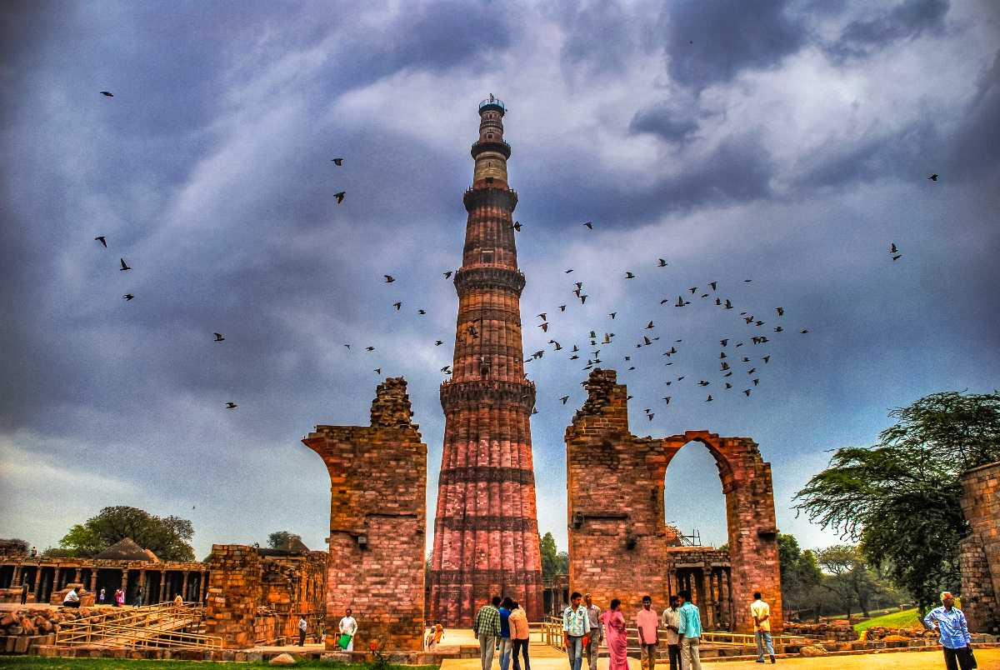
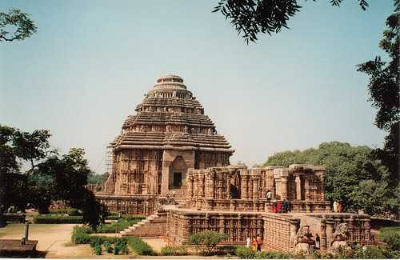

Taj Mahal
One of the seven wonders of the world, Taj Mahal is located on the banks of River Yamuna in Agra. It was built by the Mughal Emperor Shah Jahan as a memorial for his third wife, Mumtaz Mahal. It also houses the tomb of Shah Jahan himself. Constructed entirely out of white marble in the 17th century, Taj Mahal is one of the most beautiful monuments in the world. Every year visitors numbering more than the entire population of Agra pass through the magnificent gates to catch a glimpse of this breathtaking monument!

Qutub Minar
Qutub Minar is a minaret or a victory tower located in Qutub complex, a UNESCO World Heritage Site in Delhi's Mehrauli area. With the height of 72.5 metres (238 ft), Qutub Minar is the second tallest monument of Delhi. Its construction was started in 1192 by Qutb Ud-Din-Aibak, founder of Delhi Sultanate after he defeated the last Hindu Ruler of Delhi. He constructed the basement, after which the construction was taken over by his son-in-law and successor Iltutmish who constructed three additional stories. The fourth and fifth storeys were built by Firoz Shah Tuglak.

Sun Temple
Situated on the northeastern corner of Puri, Konark Sun Temple is a UNESCO World Heritage site and one of the prime tourist attractions of Odisha. Built in the form of a giant rath or chariot of the Sun God, it depicts the chariot being pulled by a set of seven horses, four on the left side and three on the right. It has three deities dedicated to the Sun God on three different sides of the temple which catch the direct rays of sun in the morning, afternoon and evening. There is also a dedicated archaeological museum inside the temple complex. The temple transforms into a stage during The Konark Dance Festival, which is held every year usually in February and attracts a lot of foreign and Indian tourists — dedicated to devotees of the Sun God.